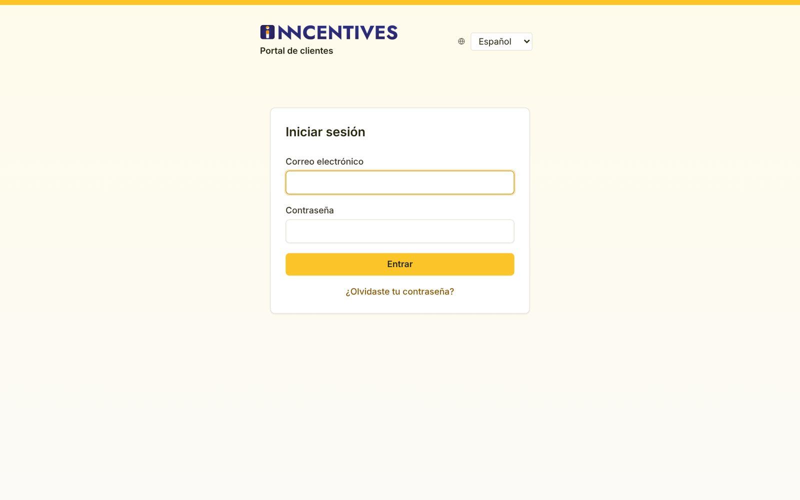
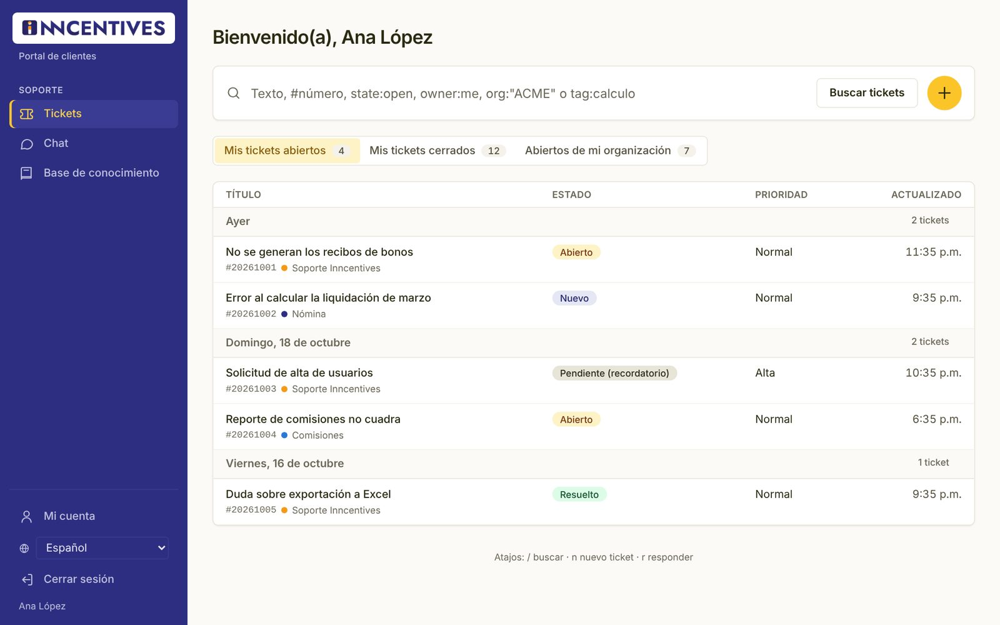
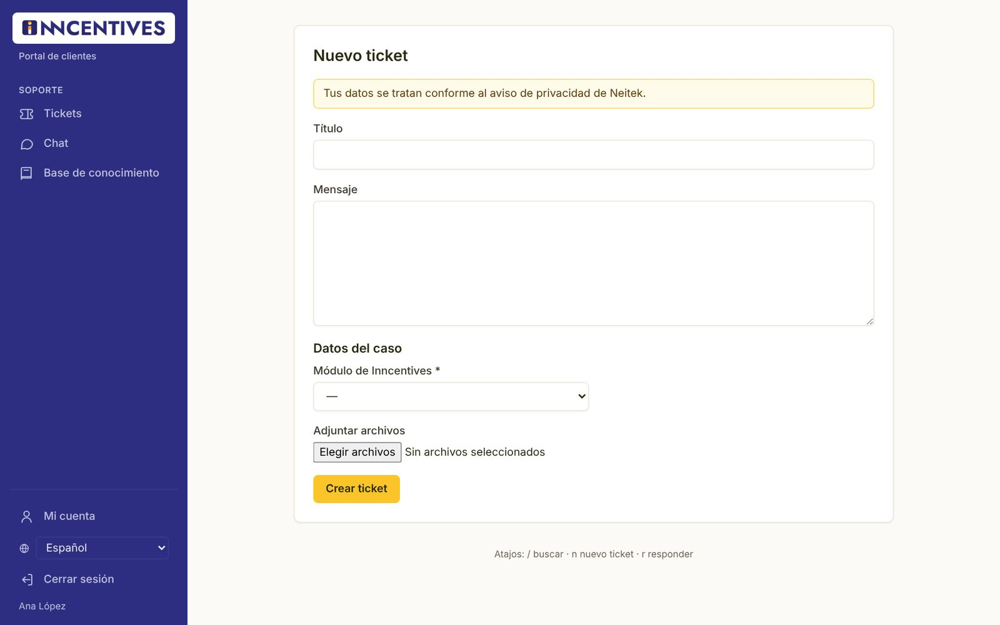
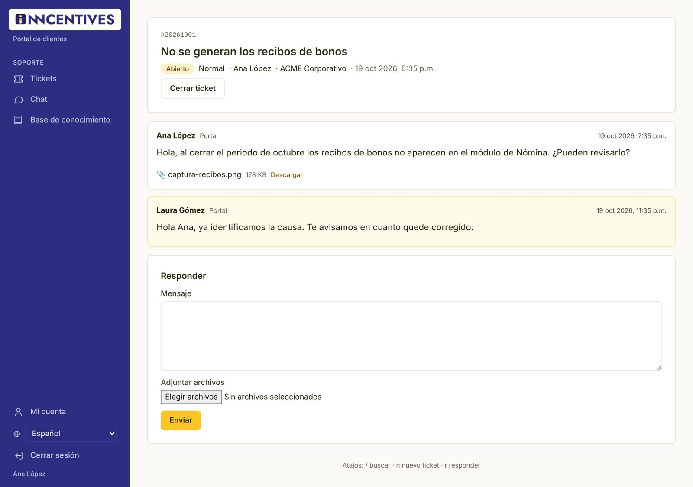
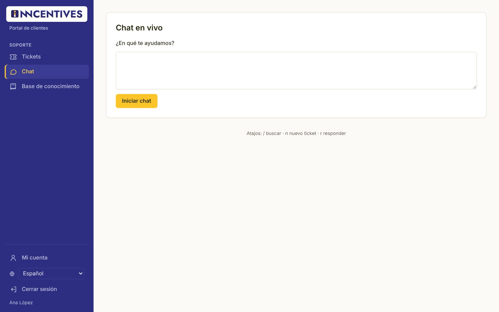
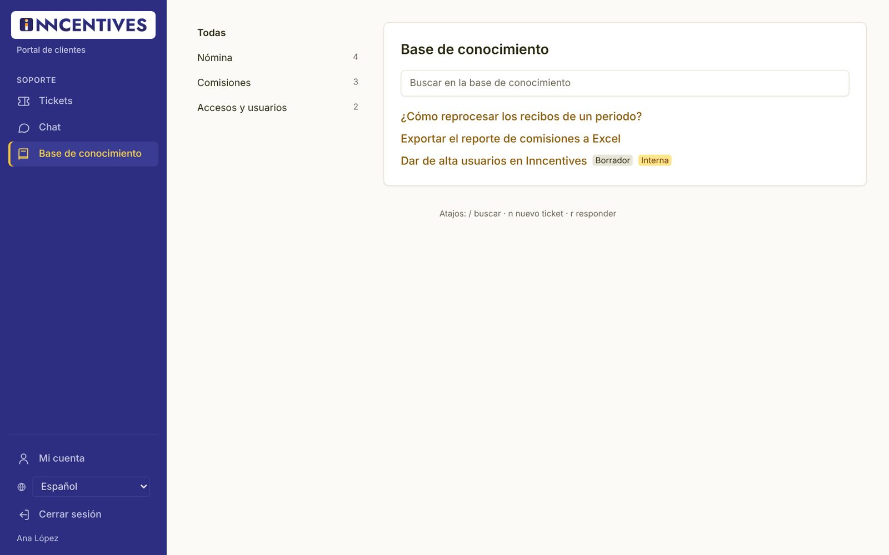
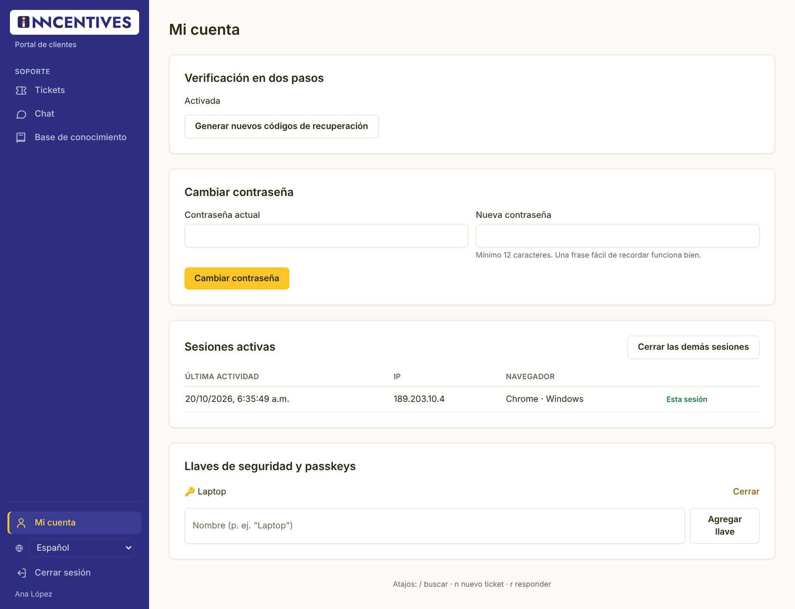

Manual del cliente
Cómo pedir ayuda al equipo de Soporte Inncentives: crear tickets, dar seguimiento, usar el chat y la base de conocimiento, y cuidar tu cuenta.
01Entrar al portal
Tu cuenta se crea con una invitación. Después entras con tu correo y contraseña.
Activar tu cuenta
- Recibirás un correo de invitación de Soporte Inncentives. Abre el enlace; la página se titula Activa tu cuenta y muestra tu correo y tu organización.
- Revisa tu Nombre, elige una Nueva contraseña (mínimo 12 caracteres) y confírmala.
- Pulsa Crear cuenta. Verás «Tu cuenta está lista. Ya puedes iniciar sesión.»
Si aparece «El enlace no es válido o ya venció», pide al equipo de soporte que te envíe una nueva invitación.
Iniciar sesión

- Abre la dirección de tu mesa de soporte en el navegador.
- Escribe tu Correo electrónico y tu Contraseña y pulsa Entrar.
- Si tienes activada la verificación en dos pasos, escribe el Código de 6 dígitos que muestra tu app de autenticación y pulsa Verificar. También puedes usar tu llave o passkey, o un código de recuperación (Usar un código de recuperación).
Tu organización puede pedir verificación en dos pasos. Si es así, después de entrar se te pedirá configurarla; sigue los pasos de la sección Mi cuenta.
Si olvidaste tu contraseña
- En la pantalla de inicio pulsa ¿Olvidaste tu contraseña?.
- Escribe tu correo y pulsa Enviar enlace. Por seguridad siempre verás el mismo mensaje, exista o no la cuenta.
- Abre el enlace del correo, escribe tu Nueva contraseña, confírmala y pulsa Cambiar contraseña.
02Conoce el portal
El menú azul de la izquierda te lleva a todo lo que necesitas.

Tickets
Tus solicitudes de soporte: crear, consultar y responder.
Chat
Conversación en vivo con un agente cuando hay alguien disponible.
Base de conocimiento
Respuestas a las dudas más frecuentes, para resolver por tu cuenta.
Mi cuenta
Contraseña, sesiones y métodos de acceso.
Abajo del menú también están el selector de idioma y Cerrar sesión. En teléfonos, el menú se abre con el botón ☰ de la esquina superior.
03Consultar tus tickets
Cada solicitud es un ticket con un número, un estado y su conversación.
Vistas
Arriba de la lista hay pestañas con un contador. Normalmente verás:
- Mis tickets abiertos: lo que está en curso.
- Mis tickets cerrados: tu historial.
- Abiertos de mi organización: los tickets de tus compañeros, solo si tu cuenta tiene ese permiso.
La lista agrupa los tickets por el día de su última actualización (Hoy, Ayer o la fecha). Debajo de cada título verás el número (por ejemplo #20261001) y el grupo que lo atiende. Pulsa el título para abrirlo.
Buscar
Escribe en el buscador de arriba y pulsa Buscar tickets. Puedes buscar por texto o por número, por ejemplo #20261001. El resultado también muestra artículos de la base de conocimiento que coinciden.
Estados de un ticket
| Estado | Qué significa |
|---|---|
| Nuevo | El ticket se acaba de crear y nadie lo ha trabajado todavía. |
| Abierto | El equipo de soporte está trabajando en él. |
| Pendiente (recordatorio) | En espera de algo (por ejemplo, información del cliente) hasta una fecha; ese día vuelve a la bandeja del agente. |
| Pendiente de cierre | Se cerrará solo en la fecha indicada si nadie responde. |
| Resuelto | Se dio una solución; si respondes, el ticket se reactiva. |
| Cerrado | El caso terminó. |
| Fusionado | Se unió con otro ticket del mismo caso; la conversación sigue en el otro. |
04Crear un ticket
Describe tu caso con el mayor detalle posible: así el equipo lo resuelve más rápido.

- Pulsa el botón amarillo + junto al buscador (o la tecla n).
- Escribe un Título breve. Al escribir aparecen sugerencias de la base de conocimiento bajo «Quizá esto te ayude:»; revísalas, tal vez ya esté la respuesta.
- En Mensaje explica qué pasó, qué esperabas y desde cuándo ocurre.
- Completa Datos del caso (por ejemplo, el Módulo de Inncentives). Los marcados con * son obligatorios.
- Si tienes capturas o archivos, agrégalos en Adjuntar archivos.
- Pulsa Crear ticket. Recibirás el número del ticket y la confirmación por correo.
No escribas RFC, CURP, NSS, CLABE ni sueldos. Si el sistema detecta datos de ese tipo, te mostrará «Tu mensaje parece contener datos de empleados… Por favor anonimízalos antes de enviarlo». Puedes corregir el texto o, si es indispensable, confirmar el envío.
Puedes adjuntar archivos de hasta 25 MB cada uno. Todos pasan por un antivirus: mientras se analizan verás Analizando…, y solo se pueden descargar cuando están limpios. Un archivo con virus queda En cuarentena.
Reportar un problema desde Inncentives
Dentro de Inncentives puede haber un botón para reportar un problema. Abre la página Reportar un problema con los datos de la pantalla donde estabas (ambiente, módulo, versión, URL y hora), así no tienes que escribirlos.
- Escribe el Título y el Mensaje. Puedes pegar una captura con Ctrl+V dentro del mensaje.
- Adjunta archivos si hace falta y pulsa Enviar reporte.
05Dar seguimiento y responder
Toda la conversación del ticket queda en un solo lugar.

- Abre el ticket desde la lista. Verás los mensajes en orden, con quién los escribió y cuándo.
- Para descargar un adjunto, pulsa Descargar junto al nombre del archivo.
- Para contestar, escribe en Mensaje (o usa la tecla r), agrega archivos si lo necesitas y pulsa Enviar.
También puedes responder desde tu correo: contesta el correo de notificación y tu mensaje se agrega al mismo ticket.
Cerrar un ticket
Si tu caso ya quedó resuelto, pulsa Cerrar ticket. Este botón solo aparece si tu mesa de soporte lo permite.
Responde en el mismo ticket: se reactiva y el equipo lo verá de nuevo. Si el ticket ya estaba cerrado, según la configuración se reabre o se crea uno nuevo enlazado.
06Chat en vivo
Para dudas rápidas, conversa en tiempo real con un agente.

- Abre Chat en el menú.
- Escribe tu pregunta en ¿En qué te ayudamos? y pulsa Iniciar chat.
- Verás «Esperando a que un agente se una…». Cuando el agente entre, escribe en Mensaje y pulsa Enviar.
- Al terminar, pulsa Terminar chat.
Cada chat queda guardado como un ticket, así que puedes consultarlo después en tu lista.
Si aparece «No hay agentes disponibles en este momento», usa el botón Nuevo ticket y te responderemos por esa vía.
07Base de conocimiento
Respuestas listas a las preguntas más comunes sobre Inncentives.

- Elige una categoría a la izquierda o deja Todas.
- Escribe al menos 3 letras en Buscar en la base de conocimiento.
- Abre un artículo para leerlo. Si el artículo existe en inglés, puedes cambiar de idioma con las pestañas Español / English.
08Mi cuenta y seguridad
Mantén tu acceso protegido.

Configurar la verificación en dos pasos
- Instala una app de autenticación en tu teléfono (Microsoft Authenticator, Google Authenticator, 1Password u otra).
- En la pantalla Configura la verificación en dos pasos, escanea el código QR con la app. Si no puedes escanearlo, captura la clave que aparece debajo.
- Escribe el código de 6 dígitos que muestra la app y pulsa Activar. Si prefieres, usa Usar una llave de seguridad o passkey en su lugar.
- Aparecerán tus códigos de recuperación. Guárdalos en un lugar seguro (por ejemplo, tu gestor de contraseñas): no se volverán a mostrar. Pulsa Ya los guardé.
Cambiar tu contraseña
- Abre Mi cuenta en la parte de abajo del menú.
- En Cambiar contraseña escribe tu Contraseña actual y la Nueva contraseña (mínimo 12 caracteres; una frase fácil de recordar funciona bien).
- Pulsa Cambiar contraseña. Por seguridad se cierran tus otras sesiones abiertas.
Sesiones activas
La tabla Sesiones activas muestra desde qué navegador e IP has entrado. La fila marcada Esta sesión es la actual. Si ves una sesión que no reconoces, pulsa Cerrar en esa fila o Cerrar las demás sesiones y cambia tu contraseña.
Llaves de seguridad y passkeys
Puedes entrar con la huella, el rostro o una llave física en lugar del código de 6 dígitos. Escribe un nombre (por ejemplo «Laptop») y pulsa Agregar llave; tu navegador te guiará. Para quitar una llave, pulsa Cerrar junto a ella.
Códigos de recuperación
Si perdiste los códigos que guardaste al activar la verificación en dos pasos, pulsa Generar nuevos códigos de recuperación. Los anteriores dejan de servir. Cada código funciona una sola vez.
Algunas acciones sensibles muestran «Confirma tu contraseña para continuar». Escríbela y pulsa Confirmar; es una protección por si alguien más usa tu computadora.
09Atajos y dudas frecuentes
Pequeños trucos para moverte más rápido.
Atajos de teclado
| Tecla | Qué hace |
|---|---|
| / | Lleva el cursor al buscador de tickets. |
| n | Abre un ticket nuevo. |
| r | Lleva el cursor al cuadro Mensaje para responder el ticket abierto. |
Los atajos no funcionan mientras escribes en un campo ni si tienes presionada Ctrl, Alt o Cmd.
Dudas frecuentes
No veo los tickets de mis compañeros
La vista Abiertos de mi organización solo aparece si tu cuenta tiene ese acceso. Pídelo al equipo de soporte.
No me llegan los correos
Revisa la carpeta de correo no deseado y agrega la dirección de soporte a tus contactos.
Perdí mi teléfono con la app de autenticación
Entra con uno de tus códigos de recuperación (Usar un código de recuperación) y después configura la app en el nuevo teléfono. Si tampoco tienes los códigos, contacta al equipo de soporte.